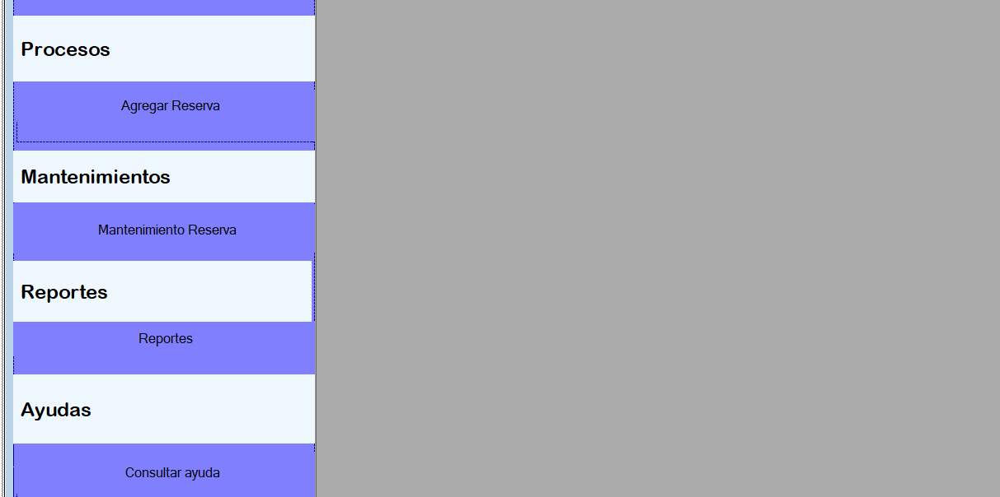

Proceso Agregar Reserva
El proceso de vehículos tiene como objetivo registrar una nueva reserva al sistema. Para ello debemos dirigirnos al menú de Procesos y luego seleccionamos la opción Agregar reserva.
Formulario
En la siguiente Figura podremos observar el Formulario que debemos llenar.